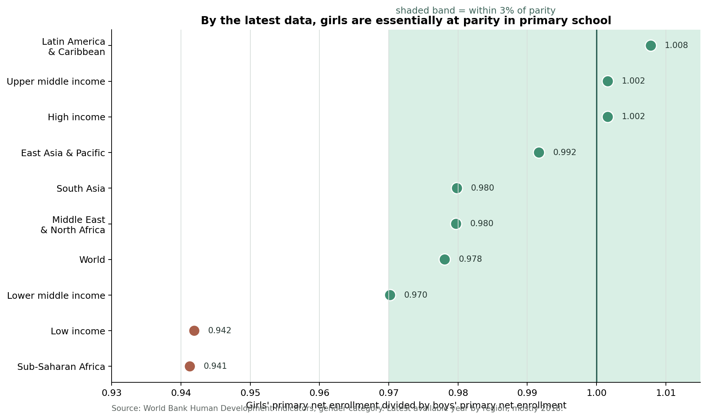
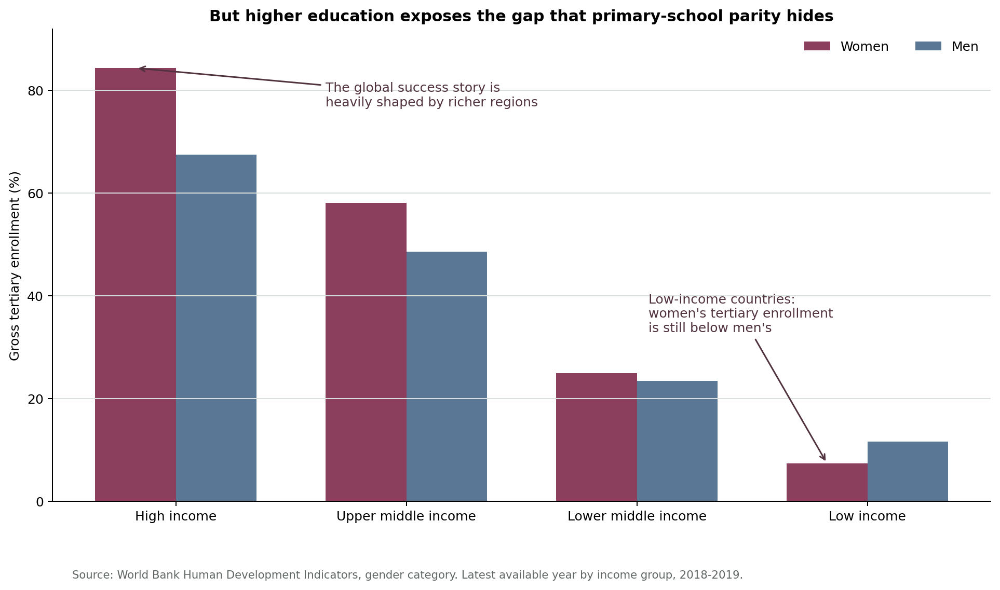

Framing the Question
The proposition is intentionally debatable. It sounds plausible when education is defined as basic access to primary school, where girls and boys are close to enrollment parity in many regions. It becomes much less convincing when education is defined as access to higher education, where the same dataset reveals large differences across income groups and continued gender gaps in low-income countries.
Visualization 1: Primary School Parity
This view frames gender equality in education as a global success story by focusing on girls' and boys' adjusted net enrollment in primary school. The derived ratio makes parity easy to see and makes remaining differences appear small.

Design Decisions and Rationale
Score: -1.5 - We used primary net enrollment rather than a broader education measure.
This is persuasive because primary enrollment is the stage where the gender gap looks most closed, making the proposition feel reasonable. It is somewhat deceptive because it narrows "education" to the strongest available evidence for the claim and avoids later outcomes such as tertiary enrollment or degree completion.
Score: 1.5 - We calculated a female-to-male parity ratio.
The ratio makes the comparison effortless: 1.0 means parity, below 1.0 means girls are behind, and above 1.0 means girls are ahead. This is mostly earnest because it directly compares the two groups, though it can hide the overall level of enrollment.
Score: -1 - We used a shaded parity band from 0.97 to 1.03.
The band visually absorbs small gender differences into a "close enough" category, helping the viewer remember the chart as a success story. The choice is not fully deceptive because tolerance bands are common, but the 3 percent threshold is a rhetorical framing choice rather than a universal standard.
Score: -0.5 - We used the latest available year for each region instead of forcing one common year.
This maximizes coverage and keeps the visualization readable, but it slightly weakens comparability because not every point comes from the exact same year. We disclosed the choice in the source note so the transformation remains visible.
Visualization 2: Higher Education Inequality
This view challenges the first chart by moving from basic schooling to higher education. It shows that gender parity in primary enrollment does not mean equal access to advanced educational opportunity, especially in low-income countries.

Design Decisions and Rationale
Score: 1 - We shifted from primary enrollment to tertiary enrollment.
This broader interpretation of education challenges the narrow optimism of the first visualization. It is persuasive because equality at the first stage of schooling does not guarantee equality in advanced opportunity, but it also changes the meaning of the proposition in a way readers need to notice.
Score: 2 - We grouped countries by World Bank income categories.
Grouping by income level is an earnest transformation because it reveals a structural pattern that individual countries or a world average could hide. It helps the reader see that global gender progress is not experienced evenly.
Score: 1.5 - We used paired bars for women and men.
Paired bars make the gender comparison straightforward while also showing the large difference in total access between income groups. This worked better than another ratio-only chart because the absolute enrollment levels are central to the ethical argument.
Score: 0.5 - We annotated the low-income and high-income contrasts.
The annotations guide attention toward the intended contrast: low-income countries have much lower tertiary access, and women there remain behind men. This is somewhat slanted because it tells readers where to look, but the claim is grounded in visible values.
Reflection on Ethical Visualization
The most difficult part of this project was that both visualizations can be defended as truthful. The first chart does not invent data: girls really are close to boys in primary net enrollment across many regions. At the same time, its design choices make "education" feel almost equivalent to primary enrollment, which is a major narrowing of the issue. The second chart also uses real data, but it changes the frame from basic access to advanced opportunity, making the same proposition feel much less convincing.
What surprised us most is how much persuasion happens before the viewer even reaches the chart. The title, selected metric, grouping, scale, and annotation decide what question the visualization seems to answer. A reader might think they are judging the evidence independently, but the design has already shaped which evidence feels relevant. In this project, the most powerful choices were not flashy visual tricks. They were quiet framing decisions.
We define ethical visualization as making design choices that help an audience understand a claim while preserving enough context for them to question it. Persuasion becomes misleading when the chart depends on hiding the frame, such as pretending that one metric fully answers a broader social question. We do not think there is a single clean boundary between acceptable persuasion and deception, but disclosure matters: a persuasive chart can still be ethical when its transformations, limitations, and framing choices are visible enough for a careful reader to evaluate.
Source and Reproducibility
The analysis uses the gender category of the World Bank Human Development Indicators dataset. The processed files and chart-generation script are included in this repository so the visualizations can be reproduced.
- Raw data:
data/raw/gender.csv - Processed data:
data/processed/latest_primary_gender_parity.csvanddata/processed/latest_tertiary_gender_access_by_income.csv - Visualization script:
src/make_visualizations.py - Dataset source: World Bank Data by Indicators repository